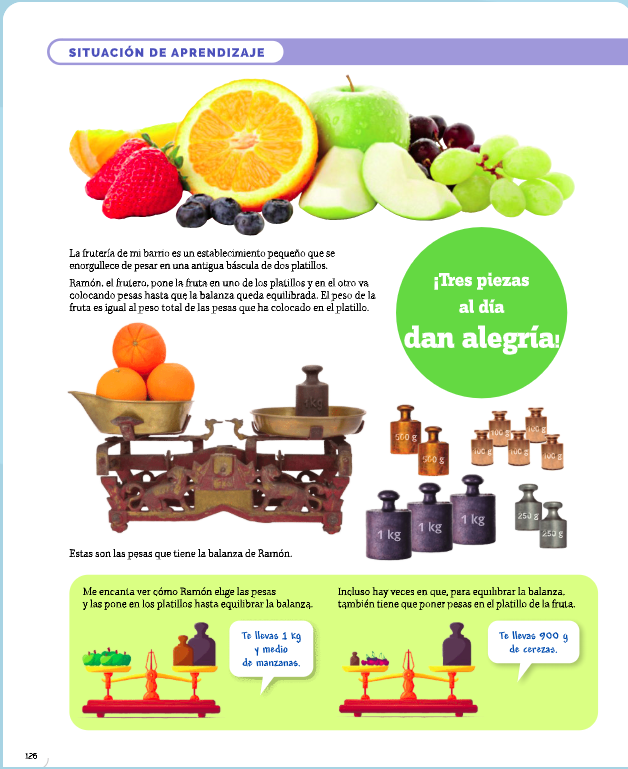

¿Te atreves a crear una fórmula para calcular precios?
En esta quinta Situación de Aprendizaje queremos que seáis capaces de realizar compras partiendo de un presupuesto limitado.
¿Cómo podemos ajustarnos a un presupuesto a la hora de hacer la compra? ¿Podemos calcular el precio de un artículo sabiendo el importe total de la compra? Para poder contestar a estas preguntas es necesario saber qué son las ecuaciones y cómo aplicarlas. Haciendo uso de ellas, podremos calcular una "fórmula" que nos permita calcular el número máximo, el precio máximo,... para poder ajustarnos a nuestro presupuesto.
Veamos la siguiente imagen, obtenida de vuestro libro de Santillana (página 126 )
